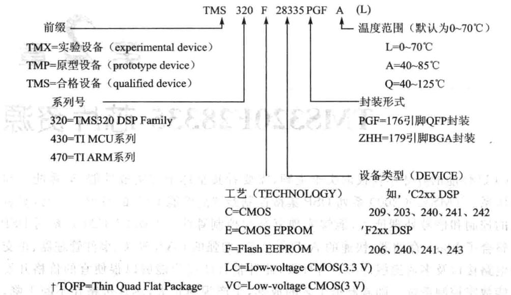
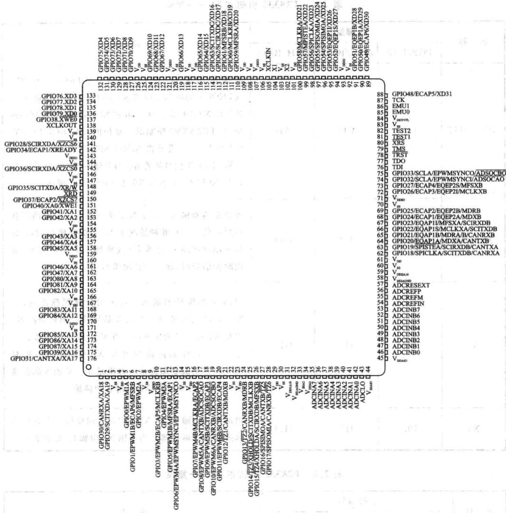

第 2 章
TMS320F28335芯资源
CPU性能的好坏不仅仅取决于主频，需要看其整体架构集成性能、运算能力与指令体系。TMS320C2000系列DSP集微控制器和性能DSP的特点于一身，具有强大的控制和信号处理能力，能够实现复杂的控制算法。TMS320C2000系列DSP片上整合了Flash存储器、快速的A/D转换器、增强的CAN模块、事件管理器、正交编码电路接口及多通道缓冲串口等外设，此种整合使用户能够以很便宜的价格开发高性能数字控制系统。随着制造工艺的成熟，生产规模扩大，芯片价格在不断下降，目前该系列DSP市场占有率非常高，在工业自动化控制、电力电子技术应用、智能化仪器仪表、电机伺服控制方面均有着泛的应用。F283X系列DSP更是在原来F28系列定点DSP的基础上增加了浮点运算内核，保持原有DSP芯片优点的同时，能够更高效地执行复杂的浮点运算，在处理速度、处理精度方面要求较高的领域，比原F28系列DSP有着更的性价比。本章将详细介绍F28335的结构、资源以及性能。
2.1F28335的封装信息
F28335芯型号表示如图2.1所，根据芯上的字母能够识别器件的型号、封装、版本等信息，版本信息如表2.1所列。主8
| 版本号 | 版本信息 | 版本ID(0x0833） | 备注 | 版本号 | 版本信息 | 版本ID（0x0833） | 备注 |
|---|---|---|---|---|---|---|---|
| 空白 | 0 | 0x0000 | TMX | D | D | 0x0004 | 内部 |
| A | A | 0x0001 | TMX | E | E | 0x0005 | TMS |
| B | B | 0x0002 | 内部 | F | F | 0x0006 | 内部 |
| C | C | 0x0003 | TMS/TMP/TMX | G | G | 0x0007 高 | TMS |
表2.1版本信息
在器件型号后边还有串版本信息，通过版本前两位可以进一步判断所的芯是合格设备还是实验设备。后边为厂地以及芯具体批次。不
另外，该系列除了上述标准产品外，还有特殊产品，分别为：
①SM320F28335-EP(enhancedproduct)：增强产品，产品生产过程控制更加严苛

具有Flash的DSP，在DEVICE之后若有A符号，表示对Flash内容可加密，如TMS320LC2406A
图2.1F28335芯片标识信息
格，工作温度一55～125℃，适合国防、航空及医疗等领域应用。
②SM320F28335-HT（high-tempreture)：高温产品，陶瓷封装，工作温度一55～220℃，适合严苛酷环境应用。
③SMJ320F28335：真正军品产品，通过美军标，陶瓷封装，适合军事、国防应用。
更具体的信息以及芯片参考价格可以在TI主页www.ti.com搜索，但网站上搜不到军品，更搜不到军品数据手册。
2.2F28335内核主要特点
F28335DSP集成了DSP和微控制器的长处，如DSP的主要特征、单周期乘法运算，F28335能够在一个周期内完成32×32位的乘法累加运算，或两个16×16位乘法累加运算，而同样32位的普通单机则需要4个周期以上才能完成；拥有完成64位的数据处理能力，从而使该处理器能够实现更高精度的处理任务。快速的中断响应使F28335能够保护关键的寄存器以及快速（更的中断延时)地响应外部异步事件。F28335有8级带有流线存储器访问的流线保护机制，因此，F28335运算时不需要容量的快速存储器。专门的分跳转（Branch-Iook-ahead)硬件减少了条件指令执的反应时间，条件存储操作更进一步提了F28335的性能。
F28335控制器还具有许多独特的功能，如可在任何内存位置进单周期读、修改、写操作，不仅提供了性能和代码效编程，还提供了许多其他原始指令，一般普通MCU则需要2个以上周期。F28335系列控制器在一个闪存节点上可以提供
150MIPS的性能，普通单片机与MCU均在30MIPS以下。
F28335处理器可采用C/C++编写软件，效率非常高。因此，用户不仅可以应用高级语言编写系统程序，也能够采用C/C++开发高效的数学算法，甚至可以与MATLAB、LabVIEW等高级语系统接口。F28335系列DSP完成数学算法和系统控制等任务都具有相当高的性能。F2833x浮点控制器设计，让设计人员可以轻松地开发浮点算法，并在符合成本效益的情况下与定点机器无缝结合。与同主频的定点DSPF2812比较，浮点算法速度是其5~8倍。
下面为TMS320F28335型号的处理器主要资源：
①32位浮点DSP，主频是150MHz，方便电机控制、电力设备控制及工业控制等。
②片上存储器：FLASH：256K×16位；SRAM：34K×16位；BOOTROM：8K×16位;OPTROM:2KX16位。其中FLASH、OPTROM受口令保护，可以保护用户程序。
③片上外设：PWM：18路；HRPWM:6路;CAP：6路;QEP:2通道；ADC：2×8通道，12位，80ns转换时间,0~3V输入量程;SCI:3通道；MCBPS:2通道;CAN：2通道;SPI：一通道； 一通道；外部存储器扩展接口：XINTF；通用输人/输出I/O：88；看门狗电路。
主要特点如下：
①F28335的CPU时钟电路可以有两种提供方式，一种是在XCLKIN引脚提供一定频率的时钟信号；另一种是在X1和X2两个引脚间连接一个晶体，配合内部的振荡电路，产生时钟源。此时钟源可以经过内部的PLL锁相环电路进倍频以及分频后，提供给28335的CPU核。CPU核接受的时钟最高频率可以达到150MHz。CPU内核指令周期为6.67ns;内核电压为1.9V，I/O引脚电压为3.3V。
②F28335为哈佛结构的DSP，在逻辑上有4MX16位的程序空间和4MX16位的数据空间，物理上将程序空间和数据空间统一成一个4MX16位的空间。F28335片内共有34KX16位单周期单次访问随机存储器SARAM，分成10个块，分别为M0、M1、L0～L7。M0和M1块SARAM的大小均为1KX16位，当复位后，堆栈指针指向M1块的起始地址，堆栈指针向上生长。M0和M1段都可以映射到程序区和数据区。L0～L7块SARAM的大小均为4KX16位，既可映射到程序空间，也可映射到数据空间，其中L0～L3可映射到两块不同的地址空间并且受片上FLASH中的密码保护，以免存在上面的程序或数据，被他人非法复制。F28335片上有256KX16位嵌式FLASH存储器和1KX16位次可编程EEPROM存储器，均受上Flash中的密码保护。FLASH存储器由8个32KX16位扇区组成，用户可以对其中任何个扇区进擦除、编程和校验，而其他扇区不变。但是，不能在其中一个扇区上执程序来擦除和编程其他的扇区。
③F28335中有6组互补对称的脉宽调制PWM，每组中包含两路PWM，分别为
PWMxA和PWMxB。每一组中都有7个单元：时基模块TB、计数比较模块CC、动作模块AQ、死区产生模块DB、PWM斩波模块PC、错误联防模块TZ、事件触发模块ET。为了PWM精度考虑，TI还设计了HRPWM，即每一组的PWMxA都可以配置为高精度PWM。
④F28335中有6组增强型捕获单元CAP，CAP模块应用定时器实现事件捕获功能，主要应用在速度测量、脉冲序列周期等方面。并且每一路CAP单元还可以通过软件配置为APWM，由于CAP单元的时基计数器为32位，所以APWM的时基计数器也是32位，这样APWM可以产生更低频率的PWM。
⑤F28335中有2组增强型正交编码单元QEP。正交编码脉冲是两个频率变化且正交(即相位相差90°）的脉冲，当它由电机轴上的光电编码器产时，电机的旋转方向可通过检测两个脉冲序列中的哪一列先到达来确定，角位置和转速可由脉冲频率（即齿脉冲或圈脉冲）来决定。
⑥F28335上有个12位A/D转换器，其前端为2个8选多路切换器和2路同时采样/保持器，构成16个模拟输入通道，模拟通道的切换由硬件自动控制，并将各模拟通道的转换结果顺序存入16个结果寄存器中。
⑦F28335中有3组SCI异步串口，也就是通常所说的UART。SCI模块支持在CPU和其他异步外设之间的数字通信。SCI的串口接收和发送均为双缓冲，接收和发送都有独的使能和中断位。在全双工模式下，两者可以独立或同步运。为了确保数据的完整性，SCI模块检查接收数据的断点、校验位和帧错误。
SCI特点：
外部引脚：2个SCI发送引脚：SCITXDSCI接收引脚：SCIRXD。
波特率可编程：有64K种设置当 时：波特率=LSRCLK÷（（BRR+1)×8);当BRR=0时波特率=LSPCLK÷16。
数据格式：一个开始位，1～8个数据位，奇校验/偶检验/无校验可选，一或两个停止位。
4个错误检测标志：校验，溢出，帧和断点检测。
全双工和半双工模式双缓冲接收和发送。
串口数据发送和接收过程可以通过中断方式或查寻方式。
⑧F28335上有两个多通道缓冲型同步串口McBSP。McBSP是MultichannelBufferedSerialPort的缩写，即多通道缓冲型串行接口，是一种多功能的同步串行接口，具有很强的可编程能力，可以配置为多种同步串口标准，直接与各种器件高速
T1/E1标准：通信器件。
MVIP和ST-BUS标准：通信器件。
标准：ISDN器件。
AC97标准：PCAudio Codec器件。
IIS标准：Codec器件。
》SPI：串行A/D、D/A，串行存储器等器件。
F28335上有两个增强型CAN总线控制器，符合CAN2.0B协议。CAN是一种多主总线，通信介质可以是双绞线、同轴电缆或光导纤维。通信速率可达1Mbps。CAN总线通信接口中集成了CAN协议的物理层和数据链路层功能，可完成对通信数据的成帧处理，包括位填充、数据块编码、循环冗余检验、优先级判别等项工作。
CAN特点如下：
a.符合CAN2.0 协议。
b.数据传输率高达1Mbps。
c.32个邮箱，每个支持以下特点：
可配置成接收和发送。
》可配置成标准或扩展的标识。
》可编程接收屏蔽。
》支持数据和远帧。
》数据长度08字节。
在接收或发送信息时，使用32位的时间标志。
新信息的接收保护。
》发送信息的动态优先级。
》带有两级中断的中断配置。
发送和接收操作时，可发出超时警报。
d.低功耗模式。
e.可编程设定的总线激活。
f.远方请求信息的自动答复。
g.无裁决或错误时，数据帧自动重新发送。
h.32位的本地网络时间计数器同步于指定的信息。
i，支持自测模式。
F28335有一通道的SPI接口。SPI是一个高速同步的串行输入/输出口，通信速率和通信数据长度都是可以编程的，DSP可以采用SPI接口同外设或其他处理器实现通信。串行外设接口主要应用于系统扩展显示驱动器、ADC以及日历时钟等器件，也可以采用主/从模式实现多处理器间的数据交换。
F2833x的SPI有如下特点：
a.4个外部引脚：SPISOMI：SPI从输出/主输引脚。SPISIMO：SPI从输入/主输出引脚。SPISTE:SPI从发送使能引脚。SPICLK：SPI串时钟引脚。
b.2种工作方式：主和从工作方式。
c.波特率：125种可编程波特率。
d.数据字长：可编程的1～16个数据长度。
e.4种时钟模式(由时钟极性和时钟相应控制）。
f.无相位延时的下降沿;SPICLK为高电平有效。在SPICLK信号的下降沿发送数据，在SPICLK信号的上升沿接收数据。
g.有相位延时的下降沿：SPICLK为高电平有效。在SPICLK信号的下降沿之前的半个周期发送数据，在SPICLK信号的下降沿接收数据。
h．相位延迟的上升沿：SPICLK为低电平有效。在SPICLK信号的上升沿发送数据，在SPICLK信号的下降沿接收数据。
i．有相位延迟的上升沿：SPICLK为低电平有效。在SPICLK信号的下降沿之前的半个周期发送数据，而在SPICLK信号的上升沿接收数据。
j．接收和发送可同时操作（可以通过软件屏蔽发送功能）。
k.通过中断或查询式实现发送和接收操作。
1.9个SPI模块控制寄存器。
m，增强特点：16级发送/接收FIFO。延时发送控制。
①F28335上有一个I²C同步串口。I²C(Inter-IntegratedCircuit)总线是一种由NXP公司开发的两线式串总线，用于连接微控制器及其外围设备。它是由数据线SDA和时钟SCL构成的串总线，可发送和接收数据。F28335包含一个I²C主从兼容的串行接口模块。I²C特点如下：兼容Philips I²CSpecificationRevision2.1(2000年1月）；最大传输速率可达400kbps；噪声滤波，可以滤除50ns的噪声；7位和10位地址模式；一个16bit接收FIFO和一个16bit发送FIFO;主从功能I²C引脚描述： 时钟SDA：I²C数据。
F28335的外部存储器接口包括：20位地址线，16（最大32）位数据线，3个片选控制线及读/写控制线。这3个选线映射到3个存储区域，Zone0、Zone6和Zone7。这3个存储器可分别设置不同的等待周期。
③F28335一共有88个通用输/输出接口，也就是常说的 此88个GPIO都可以通过软件配置为特殊功能或者通输输出接。而且GPIO0～GPIO63可以通过外部中断寄存器配置为外部中断功能，即当某一个GPIO外部中断使能的时候，外部电平发生变化时，此引脚可以触发中断。
F28335有6通道的DMA处理器，大大改进了大规模数据传输的效率。
2.3 与DSP2812的性能对比
当前C2000系列DSP以2812与28335应最，两者主要性能对如表2.2所列。
| 性能 | F28335 | F2812 |
|---|---|---|
| CpU | 32位定点+单精度浮点单元FPU | 32位定点CPU |
| 系统频率 | 150MHz | 150MHz |
| 片内FLASH | 256KX16位 | 128K×16位 |
| Boot ROM | 8KX16位 | 8K×16位 |
| OTP | 1K×16位 | 1K×16位 |
| 32位CPU定时器 | 3个 | 3个 |
| SRAM | 34KX16位 | 18K×16位 |
| 128位密码保护 | 有 | 有 |
| 系统外部接口（XNTF） | 有 | 有 |
| 通用1/O口(GPIO) | 88个（可配置4种工作模式） | 56个（可配置2种工作模式） |
| ADC | 12位、16通道、12.5MSPS | 12位、16通道、12.5MSPS |
| 电机控制外设 | ePWM（最多18路，包括6路HRPWM）6路32位eCAP输入（可配置为PWM)2个32位eQEP | EVAEVB |
| SPI | 1个 | 1个 |
| SCI | 3个 | 2个 |
| Ecan | 2个 | 1个 |
| $1²c$ | 1个 | 无 |
| 」 McBSP/SPI | 2个 | 1个 |
| 外部中断 | 8个 | 3个 |
| PIE | 支持58个外设中断 | 持45个外设中断 |
| DMA | 6个 | 无 |
表2.2 F28335与F2812的性能对比
2.4F28335的引脚分布及其引脚功能
F28335包含多种封装，176引脚PGF/PTP薄型四扁平封装（LQFP)的顶视图如图2.2所。引脚信号说明如表2.3~表2.9所列。
| 名称 | 引脚编号 | 说明 |
|---|---|---|
| PGF/PTP | ZHH/BALL | ZHH/BALL |
| TRST | 78 | M10 |
| TCK | 87 | |
| TMs | 79 | |
| TDI | 76 | |
| TDO | 77 | |
| EMUO | 85 | L11 |
| EMU1 | 86 | P12 |
表2.3F28335引脚说明—JTAG

图2.2 F28335的176引I脚PGF/PTP薄型四方扁平封装(LQFP)的顶视图
| 名称 | 引脚编号 | 说明 |
|---|---|---|
| PGF/PTP | ZHH/BALL | ZHH/BALL |
| VDD3VFL | 84 | M11 |
| TEST1 | 81 | K10 |
| TEST2 | 82 | P11 |
表2.4F28335引脚说明——FLASH
| 名称 | 引脚编号 | 说明 |
|---|---|---|
| PGF/PTP | ZHH/BALL | ZHH/BALL |
| XCLKOUT | 138 | C11 |
| XCLKIN | 105 | J14 |
| X1 | 104 | J13 |
| X2 | 102 | J11 |
表2.5F28335引脚说明——时钟
| 名称 | 引脚编号 | 说明 |
|---|---|---|
| PGF/PTP | ZHH/BALL | ZHH/BALL |
| XRS | ||
| 80 | L10 | M13 |
表2.6F28335引脚说明-复位
| 名称 | 引脚编号 | 说明 |
|---|---|---|
| PGF/PTP | ZHH/BALL | ZHH/BALL |
| ADCINA7 | 35 | K4 |
| ADCINA6 | 36 | J5 |
| ADCINA5 | 37 | L1 |
| ADCINA4 | 38 | 1.2 |
| 器A的8通道 | 模拟输入(1) | |
| ADCINA3 | 39 | L3 |
| ADCINA2 | 40 | M1 |
| ADCINA1 | 41 | N1 |
| ADCINAO | 42 | M3 |
| ADCINB7 | 53 | K5 |
| ADCINB6 | 52 | P4 |
| ADCINB5 | 51 | N4 |
| ADCINB4 | 50 | M4 |
| ADCINB3 | 49 | L4 |
| ADCINB2 | 48 | P3 |
| ADCINB1 | 47 | N3 |
| ADCINBO | 46 | $P2$ |
| ADCLO | 43 | M2 |
| ADCRESEXT | 57 | M5 |
| ADCREFIN | 54 | L5 |
| ADCREFP | 56 | P5 m° |
| ADCREFM | 53 | 15N5 |
表2.7F28335引脚说明——ADC信号
| 名称 | 引脚编号 | 说明 |
|---|---|---|
| PGF/PTP | ZHH/BALL | ZHH/BALL |
| VDDA2 | 34 | K2 |
| VSSA2 | 33 | K3 |
| VDDAIO | 45 | N2 |
表2.8 F28335引脚说明——CPU和输入/输出电源引脚
| 名称 | 引脚编号 | 说明 | |
|---|---|---|---|
| PGF/PTP | ZHH/BALL | ZHH/BALL | |
| VSSAIO | 44 | P1 | N1 |
| VDD2A18 | 31 | J4 | K3 |
| VSS1AGND | 32 | K1 | L4 |
| VDD2A18 | 59 | M6 | L6 |
| VSS2AGND | 58 | K6 | P2 |
| VDD | 4 | B1 | D4 |
| VDD | 15 | B5 | D5 |
| VDD | 23 | B11 | D8 |
| VDD | 29 | C8 | D9 |
| VDD | 61 | D13 | E11 |
| VDD | 101 | E9 | F4 |
| CPU和数字电源引脚 | |||
| VDD | 109 | F3 | F11 |
| VDD | 117 | F13 | H4 |
| VDD | 126 | H1 | J4 |
| VDD | 139 | H12 | J11 |
| VDD | 146 | J2 | K11 |
| VDD | 154 | K14 | L8 |
| VDD | 167 | N6 | |
| VDDIO | 9 | A4 | A13 |
| VDDIO | 71位 | B10 | B1 |
| VDDIO | 93 | E7 | [)D7 |
| VDDIO | 107 | E12 | D11 |
| VDDIO | 121 | F5 | E4 |
| VDDIO | 143 | L8 | G4 |
| VDDIO | 159 | H11 | G11 |
| VDDIO | 170 | N14 | L10 |
| VDDIO | N14 | ||
| VSS | 3 | A5 | A1 |
| VSS | 8 | A10 | A2$ |
| VSS | 14 | A11 | A14 |
| VSS | 22 | B4 | B14 |
| VSS | 30 | C3 | F6 |
续表2.8
| 名称 | 引脚编号 | 说明 |
|---|---|---|
| PGF/PTP | ZHH/BALL | ZHH/BALL |
| VSS | 60 | C7 |
| VSS | 70 | C9 |
| VSS | 83 | D1 |
| VSS | 92 | D6 |
| VSS | 103 | D14 |
| VSS | 106 | E8 |
| VSS | 108 | E14 |
| VSS | 118 | F4 |
| VSS | 120 | F12 |
| VSS | 125 | G1 |
| VSS | 140 | H10 |
| VSs | 144 | H13 |
| VSS | 147 | J3 |
| VSS | 155 | J10 |
| VSS | 160 | J12 |
| VSS | 166 | M12 |
| VSS | 171 | N10M |
| VSS | 明 | N11 |
| VSS | P6 | |
| VSS | P8 |
| 名称 | 引脚编号 | 说明 | ||
|---|---|---|---|---|
| PGF/PTP | ZHH/BALL | ZHH/BALL | ||
| GPIO0EPWM1A | 5 | C1 | D1 | 通用1/O引脚0(1/O/Z）增强型PWM1输出A通道和HRPWM通道(O) |
| GPIO1EPWM1BeCAP6MFSRB | 6 | D321 | D2 | 通用1/0引脚1(1/O/Z)增强型PWM1输出B通道(O)增强型捕获1/O口6(1/O)多通道缓冲串口B(MCBSP-B)的接收帧同步(I/O) |
| GPIO2EPWM2A | 7 | D2 | D3 | 通用I/O引脚2(I/O/Z）增强型PWM2输出A通道和HRPWM通道（O) |
表2.9F28335引脚说明—GPIOA和外设信号
续表2.9
| 名称 | 引脚编号 | 说明 |
|---|---|---|
| PGF/PTP | ZHH/BALL | ZHH/BALL |
| GPIO3EPWM2BeCAP5MCLKRB | 10 | E4 |
| GPIO4EPWM3A | 11 | E2 |
| GPIO5EPWM3BeCAP1MFSRA | 12 | E3 |
| GPIO6EPWM4AMSYNCLEPWMSYNCO | 13 | E1 |
| GPIO7EPWM4BMCLKRAEcap2 | 16 | F2 |
| GPIO8 | 17 | |
| EPWM5ACANTXB | ||
| ADCSOCA | ||
| GPIO9EPWM5BSCITXDBEcap3 | 18 | G5 |
| GPIO10EPWM6ACANRXB | 119 | G4 |
续表2.9
| 名称 | 引脚编号 | 说明 |
|---|---|---|
| PGF/PTP | ZHH/BALL | ZHH/BALL |
| GPIO11EPWM6BSCIRXDBEcap4 | 20 | G2 |
| GPIO12TZ1CANTXBMDXB | 21 | G3 |
| GPIO13TZ2CANRXBmdrB | 24 | H3 |
| GPIO14TZ3/XHOLDSCITXDBMCLKXB | 25 | H2 |
| GPIO15TZ4/XHOLDASCIRXDBMCLKXB | 26 | H4 |
| GPIO16SPISIMOACANTXB5(1) | 27 | H5 |
| GPIO17SPISOMIACANRXB6(I) | 28 | J1 |
续表2.9
| 名称 | 引脚编号 | 说明 | |
|---|---|---|---|
| PGF/PTP | ZHH/BALL | ZHH/BALL | |
| GPIO18SPICLKASCITXDBCANRXA | 62 | L6 | N8 |
| GPIO19SPISTEASCIRXDBCANTXA | 63 | K7 | M8 |
| GPIO20EQEP1AMDXACANTXB | 64 | L7 | P9 |
| GPIO21EQEP1BMDRACANRXB | 65 | P7 | N9 |
| GP1O22EQEP1SMCLKXASCITXDB | 66 | N7 | M9 |
| GPIO23EQEP1IMFSXASCIRXDB | 67 | M7 | P10 |
| GPIO24ECAP1EQEP2AMDXB | 681 | M8 | N10 |
| GPIO25ECAP2EQEP2BMDRB | 69 | N8 | M10 |
续表2.9
| 名称 | 引脚编号 | 说明 中 |
|---|---|---|
| PGF/PTP | ZHH/BALL | ZHH/BALL |
| GPIO26ECAP3EQEP2IMCLKXB | 72 | 然K86 |
| GPIO27ECAP4EQEP2SMFSXB | 73 | L9 |
| GPIO28SCIRXDAXZCS6 | 141 | E10 |
| GPIO29SCITXDAXA19 | 2 | C2 |
| GPIO30CANRXAXA18 | 1 | B2 |
| 1K01 | ||
| GPIO31CANTXAXA17 | 176 | A2 |
| GPIO32SDAAEPWMSYNCIADCSOCAO | 74 | 期！ |
| N9 | M11国国 | I²C的数据时钟开漏双向口(I/OD)增强型PWM外部同步脉冲输入(O)ADC启动转换A(I/O) |
| M1 | ||
| GPIO33SCLAEPWMSYNCOADCSOCBO | 75 | 0P9 |
| 44 | ||
| ADC启动转换B(I/O) | ||
| GPIO34ECAP1XREADY | 142 | D10 |
续表2.9
| 名称 | 引脚编号 | 说明 |
|---|---|---|
| PGF/PTP | ZHH/BALL | ZHH/BALL |
| GPIO35SCITXDAXR/W | 148 | A9 |
| GPIO36SCIRXDAXZCS0 | 145 | C10件加 |
| GPIO37ECAP2XZCS7 | 150 | D9 |
| GPIO38XWEO | 137 | D11 |
| GPIO39XA16 | 175 | B3 |
| GPIO40XA0/XWE1 | 151 | D8 |
| GPIO41XA1 | 152 | A8 |
| GPIO42XA2 | 153 | B8 |
| GPIO43XA3 | 156 | B7品 |
| GPIO44XA4 | 1157人 | A7 |
| GPIO45XA5 | 158 | D7 |
| GPIO46XA6 | 161 | B6 |
| GPIO47XA7 | 162 | A6 |
| GPIO48ECAP5XD31 | 88 | P13 |
续表2.9
| 名称 | 引脚编号 | 说明 | 章 3 |
|---|---|---|---|
| PGF/PTP | ZHH/BALL | ZHH/BALL | |
| GPIO49ECAP6XD30 | 89 | N13点 | U:L13 |
| GPIO50EQEP1AXD29 | 90 | P14 | L12 |
| GPIO51EQEP1BXD28 | 91 | M132 | K14 |
| GPIO52EQEP1SXD27 | 94 | M14 | K13 |
| GPIO53EQEP1IXD26 | 95 | L12 | K12 |
| GPIO54SPISIMOAXD25 | 96 | L13 | 11J14 |
| GPIO55SPISOMIAXD24 | 97 | L14民 | J13味鼎 |
| GPIO56SPICLKAXD23 | 98 | K11 | J1210 |
| GPIO57SPISTEAXD22 | 99 | K13 | i=1H13a1: |
| GPIO58MCLKRAXD21 | 100 | K12lua,L | H12国临 |
| GPIO59MFSRAXD20 | 110 | H14 | H11 |
续表2.9
| 名称 | 引脚编号 | 说明 |
|---|---|---|
| PGF/PTP | ZHH/BALL | ZHH/BALL |
| GPIO60MCLKRBXD19 | 111 | G14 |
| GPIO61MFSRBXD18 | 112 | G1225 |
| GPIO62SCIRXDCXD17 | 113 | G13 |
| GPIO63SCITXDCXD16 | 114 | G11 |
| GPIO64XD15 | 115 | G10 |
| GPIO65XD14 | 116 | F14 |
| GPIO66XD13 | 119 | 69F11 |
| GPIO67XD12 | 122 | E13 |
| GPIO68XD11 | 123 | E111 |
| GPIO69XD10 | 124 | F10 |
| GPIO70XD9 | 127 | D12中满财 |
| GPIO71XD8 | 128a | C14 |
| GPIO72XD7 | 129 | 器B14 |
| GPIO73XD6 | 130 | C12 |
续表2.9
| 名称 | 引脚编号 | 说 明 | |
|---|---|---|---|
| PGF/PTP | ZHH/BALL | ZHH/BALL | |
| GPIO74XD5 | 131 | C13 | B12 |
| GPIO75XD4 | 132 | A14 | C12 |
| GPIO76XD3 | 133 | B13 | A11 |
| GPIO77XD2 | 134 | A13 | B11 |
| GPIO78XD1 | 135 | B12 | C11 |
| GPIO79XDO | 136 | A12 | B10 |
| GPIO80XA8 | 163 | C6 | |
| GPIO81XA9 | 164 | E6 | B5 |
| GPIO82XA10 | 165 | C5 | |
| GPIO83XA11 | 168 | D5 | A4 |
| GPIO84XA12 | T0X169.1 | E5 | B4OJV |
| GPIO85XA13 | 172 | C4 | C4 |
| GPIO86XA14 | 173 | D4 | A3 |
| GPIO87XA15 | 174 | A3 | B3 |
| XRD | 149 | B9 | A8 |